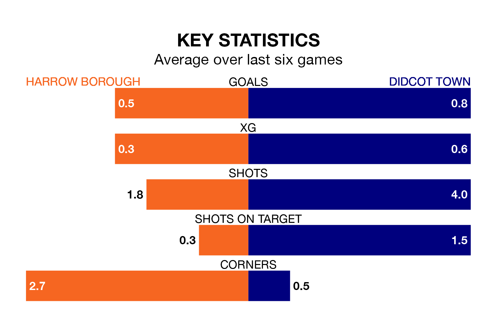

Struggling Harrow Borough face Didcot Town at the Earlsmead Stadium on Saturday looking to build on a win in their last league outing.
After securing all three points with a 2-0 victory over Gosport Borough on Tuesday, Harrow sit 21st in the Southern League Premier South.
They travel to play a Didcot side 22nd in the standings, who lost in their last match, 1-0 against Dorchester Town, on February 3.
Harrow are in bad form in the Southern League Premier South, with one win and a draw from their last six games.
With two wins and a draw over that period, Didcot's form is better – they have taken seven points from 18, compared to Borough's four.
With 28 goals in 27 games so far this season, Town are the league's lowest scorers with 1.0 goals per game. And they are conceding more than average, letting in 63 goals at a rate of 2.3 per game.
The home team are also below average scorers, with 1.2 goals per game, compared to a league average of 1.7. They have conceded 2.3 goals per game.
Updated: 11:43 (UTC), 08/02/24